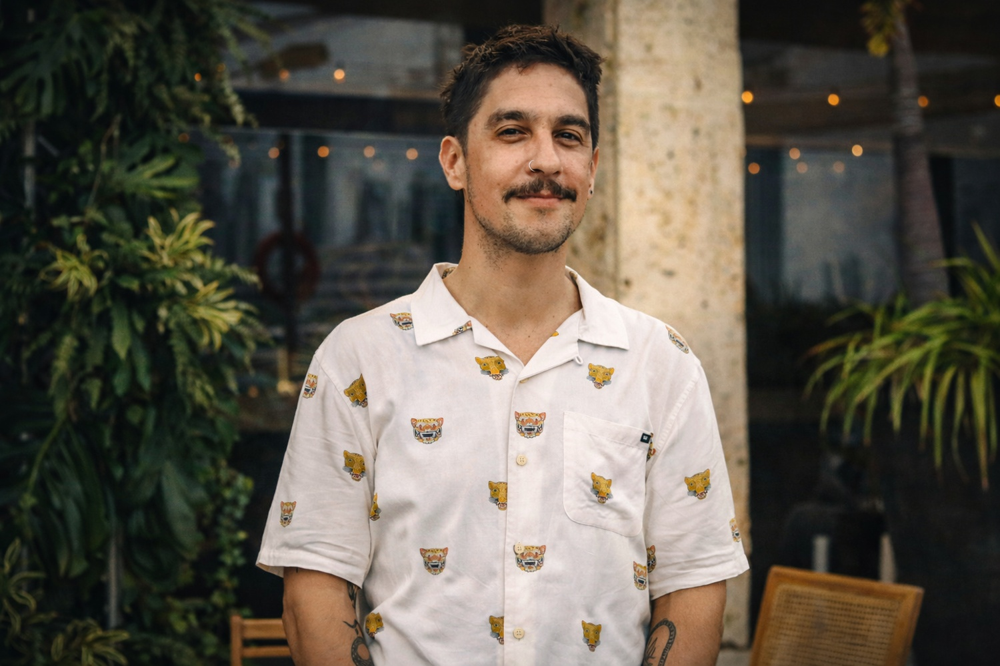
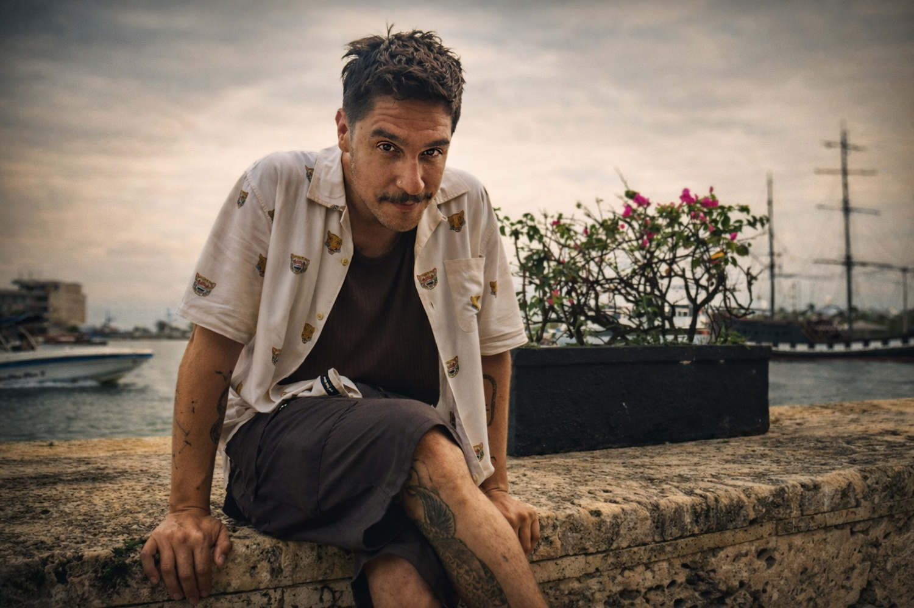

“Mientras sigamos matándonos entre nosotros, no resolveremos la crisis ambiental”: Andrés Cota Hiriart

México es uno de los países más megadiversos del planeta –alberga más de 200.000 especies–, pero también sufre una acelerada pérdida de biodiversidad. La Comisión Nacional para el Conocimiento y Uso de la Biodiversidad (CONABIO) advierte que esta disminución es resultado de la actividad humana y el cambio climático. En concreto, se calcula que en el país se ha perdido cerca de la mitad de sus ecosistemas naturales.
Estos datos ilustran un panorama grave: la deforestación, la contaminación de cuerpos de agua y la invasión de especies exóticas destruyen hábitats críticos. Esa situación pone en riesgo criaturas icónicas como el ajolote, el emblemático anfibio mexicano. Como recuerda el propio biólogo Andrés Cota Hiriart, “esta especie endémica del Valle de México se ha reducido, y ahora al ajolote solo le queda Xochimilco como un lugar en libertad, y la situación allá está terrible”.
A ese deterioro ecológico se suman intensos problemas sociales; alrededor de 3 de cada 10 mexicanos viven en situación de pobreza multidimensional, y más del 60% de la población urbana sufre interrupciones en el suministro de agua. En medio de estas tensiones, parecería complicado pensar en educación ambiental o conservación. Sin embargo, entender la naturaleza resulta crucial porque las soluciones estructurales demandan precisamente ese cambio de perspectiva.
Invitado al Hay Festival de Cartagena (enero 2026) para hablar sobre este “anfibio inmortal”, Andrés Cota Hiriart aporta una voz experta y distinta. Es biólogo por la Universidad Nacional Autónoma de México (UNAM) y maestro en Comunicación de la Ciencia por el Imperial College de Londres, antiguo miembro del Sistema Nacional de Creadores del Fondo Nacional para la Cultura y las Artes (FONCA) (narrativa-ensayo) y profesor de literatura en la Escuela Superior de Cine (ESCINE). Preside la Sociedad de Científicos Anónimos y conduce el programa de radio Masaje Cerebral en Reactor FM y el segmento Revista de la Universidad de México en TV UNAM. Autor de libros como Cabeza ajena, Faunologías y Fieras familiares, es especialmente conocido por El ajolote. Biología del anfibio más sobresaliente del mundo, un ensayo que él mismo presenta como una carta de amor y advertencia sobre la suerte de esta especie.
Esa combinación de conocimiento científico riguroso y sensibilidad literaria hace que tenga mucho que decir sobre el punto donde confluyen naturaleza y sociedad.
¿En qué momento supiste que tu trayectoria combinaría literatura y zoología? ¿Recuerdas tu primer texto o experiencia significativa?
Sí, lo recuerdo perfectamente porque empecé a escribir tarde. Apenas a los 26 o 27 años, cuando comencé a bucear. Curiosamente, ese primer buceo me dejó una urgencia de escribir. Bajo el agua no puedes hablar, el silencio te obliga a contemplar. Para alguien como yo, muy hablador, la escritura se volvió otra trinchera de la charla que tanto disfruto.
Creo que en ese primer viaje submarino sentí la necesidad de compartir lo que veía, porque en el mar el tiempo se siente distinto y todo se vuelve más lento, casi meditativo. Mis primeras experiencias buceando me pedían ser contadas. De hecho, mi primer texto fue un correo que mandé a varias personas relatando esa inmersión inicial. Todavía tengo ese borrador guardado. Lo reutilicé para abrir mi nuevo libro, es lo que ahora llamo mi mito de origen literario.
Así empezó todo. Esas sensaciones bajo el agua –la respiración controlada, la imposibilidad de hablar, el descubrir un mundo enorme y silencioso– me sacudieron. Hablar en el mar es imposible, así que tuve que escribir para seguir compartiendo mi entusiasmo. Para mí, escribir es una forma de conversación extendida, y el buceo me mostró por qué necesitaba esa extensión: había una historia que quería contar. Ese fue mi primer texto y el inicio de esta trayectoria entre la literatura y la ciencia.
¿Cómo definirías el rol o propósito de tu trabajo como divulgador científico y escritor? ¿Qué crees que haces tú cuando comunicas estos temas?
Creo que mi trabajo es un poco ser un médium para las voces de otros animales. La idea me gusta, soy un canalizador de asombro. Me veo contagiando a la gente con la pasión por el mundo no humano que me fascina. En mis libros y charlas intento llamar la atención sobre eso que normalmente ignoramos, las criaturas con las que compartimos el planeta.
La ciencia y la literatura, en mi caso, se equilibran mutuamente. A veces desearía librarme de mi “cabeza de científico” para ser solo creativo; otras veces desearía apagar mi parte artística para ser puramente racional. Pero esa tensión es un motor de lo que hago. La ciencia nos ayuda a entender lo complejamente increíble que es el mundo, y la literatura nos permite contarlo de forma que sorprenda y emocione. Como decía Javier Cercas, cualquier cosa en la que te fijes tiene una complejidad enorme. La ciencia es un motor para buscar esa complejidad; la literatura es la trinchera desde donde la señalo para que otros la vean.
Entonces yo sí, me considero en parte un traductor o mensajero. Apunto un reflector hacia los lugares menos visibles. En mi caso, esos lugares han sido Xochimilco, las islas Galápagos, Borneo, Sulawesi o la isla Guadalupe. Quiero pensar que, al poner atención en lo que a mí me maravilla, logro contagiar esa curiosidad. Después de todo, nada de lo que conocemos se puede valorar si no lo conocemos primero. Si la gente no presta atención al ajolote, por ejemplo, difícilmente pensará en conservar su hábitat. Por eso insisto en contar las historias de los animales, para que exista la posibilidad de que la gente los valore y los proteja.

Has puesto atención en el ajolote mexicano. ¿Por qué crees que justamente el ajolote se ha vuelto un símbolo tan fuerte –de cultura, de conservación y de ciencia– en México?
El ajolote es, sin duda, un emblema para la mexicanidad. Es una criatura peculiar y única, un anfibio neoténico, que nunca pasa por la metamorfosis típica de las salamandras y se queda con branquias por siempre. Además, tiene la capacidad extraordinaria de regenerar extremidades y órganos internos. Es prácticamente un niño para siempre que puede volver a crecer cualquier brazo o incluso partes internas. Todo esto lo hace fascinante desde el punto de vista biológico.
Pero también es un símbolo cargado de historia y cultura. El ajolote ha estado en la mitología mesoamericana desde antes de la escritura colonial: era parte de las leyendas de los mexicas. Cuando llegaron los españoles, lo relacionaron con las salamandras del folklore europeo y lo consideraron una criatura perversa o diabólica. A pesar de eso –o tal vez por eso mismo– siguió presente en la cultura novohispana, y después en la literatura mexicana. Piensa que escritores de la talla de Julio Cortázar, Octavio Paz, Emilio Pacheco, Juan José Arreola y muchos otros han dedicado páginas a este bicho. El ajolote vive en los textos como un mito viviente, un enigma científico del XIX que luego se volvió musa literaria.
Hoy esa tradición continúa, y además se ha vuelto un símbolo de la biodiversidad amenazada. El ajolote es uno de los animales más representativos de México: está en cuentos, en cine infantil, en caricaturas, hasta en Pokémon y en Minecraft. Hace poco saltó a la fama internacional porque apareció en un billete de 50 pesos de México, un billete que, curiosamente, ganó el premio al mejor diseño de 2021. Es como si el ajolote hubiera ascendido a la categoría de un dios moderno. En estos tiempos el único “dios real” es el billete que tenemos en la cartera. El problema es la paradoja que eso implica, normalmente solo salen en las monedas los muertos o los dictadores, ¿no? Entonces nos tardamos muchísimo en llegar a esta especie casi al borde de la desaparición para ponerla en un billete. Es una especie de moraleja amarga: enaltecemos al ajolote cuando está a punto de dejar de existir en vida.
¿Qué significa hablar de naturaleza y animales cuando el país enfrenta problemas muy urgentes como la violencia, la desigualdad o la falta de servicios básicos?
Desde luego, para mí escribir de naturaleza en un contexto social tan grave es como correr un maratón con una piedra en el zapato. No puedo ni debo ignorar que en nuestro mundo el sufrimiento humano es enorme: feminicidios, desapariciones, pobreza, inseguridad… Son crisis que arrasan cotidianamente. Pero mi refugio personal es enfocarme en algo más allá de la crueldad humana. Creo que hay paz profunda en pensar que existe un universo de vida más allá de nuestra especie. Mientras nosotros nos matamos entre nosotros, en la naturaleza siguen existiendo bosques, insectos, peces… Por eso hablar de animales a veces me reconcilia, me recuerda que somos solo una parte del todo y que el resto del mundo sigue su curso.
Ahora bien, tampoco podemos cerrar los ojos. La crisis ambiental no se va a resolver por completo si primero no enfrentamos nuestras propias guerras sociales. No podemos pensar en salvar corales, jaguares o ajolotes de lleno mientras al mismo tiempo haya niños sin agua potable, millones en pobreza y medios de comunicación que a duras penas cubren lo básico. Es una falta de coherencia social enorme. Le digo a la gente: los problemas ambientales están entrelazados con nuestras problemáticas humanas. Hasta que no acabemos con la guerra entre humanos –cualquier guerra, desde la violencia doméstica hasta los bloqueos por balas–, va a ser muy difícil trabajar de verdad en el ambiente.
A veces bromeo. Haría falta que nos invadiera una especie extraterrestre para darnos cuenta de que tenemos que unirnos. Si vinieran los marcianos y dijeran “oigan, ¿qué están haciendo?”, probablemente nos despertaríamos de la pesadilla. Pero mientras tanto vivimos a favor de tráfico, de impunidad, de ignorancia. Debemos aprender a vernos a nosotros mismos como una especie más entre millones y a entender que dependemos de lo que pase con todas las demás. Esa conciencia es urgente. Aunque la realidad es muy difícil, creo que no podemos renunciar a difundir la idea de que somos parte de un ecosistema común. De poco serviría proteger un bosque remoto si luego las personas no pueden ni tomar agua limpia en sus casas. Al final, defender la naturaleza también es darnos cuenta de la narrativa global de la que somos parte, si nos consideramos los “favoritos” de la creación, estamos cometiendo un error enorme.
¿Cómo ves la forma en que se habla del cambio climático y la crisis ecológica hoy en día? Mucha gente habla del “fin del mundo” o del “día cero” del agua. ¿Crees que ya estamos saturados de mensajes alarmistas, hasta el punto de volvernos insensibles a ellos?
No es fácil generalizar, pero sí noto una banalización preocupante. La gente lee titulares como “Ciudad X sin agua” una y otra vez; proclamas como “ya llegó el día cero” se repiten tanto que luego pasa y es solo el día uno. Pasamos bastante desapercibidos al cambio ambiental, porque es tan gradual que cuesta sentirlo. Claro que no podemos ser ignorantes del cambio climático ni pretender que no pasa nada; los glaciares se derriten y los insectos desaparecen, y hay que contarlo. Pero, por otro lado, exagerar todo como si fuera el último día del mundo también se vuelve contraproducente. Cuando un problema se anuncia “catastrófico” cada semana, la gente termina entendiéndolo como una gota más en el océano de malas noticias.
Mi reflexión es que debemos salir de la narrativa apocalíptica. El planeta no va a tener un solo fin del mundo espectacular; ya hemos tenido muchos “pequeños apocalipsis” a diario. Para algunas comunidades indígenas, la catástrofe ya es la destrucción de sus territorios; para muchas especies su fin ha llegado sin que lo notemos. Si pudiéramos viajar en el tiempo para ver el mundo de hace cien años, diríamos “¡pero esto sí es un fin del mundo!”, ya vivimos una realidad postapocalíptica en muchos sentidos. Eso no significa que debamos dejar de advertir los riesgos, pero sí debemos matizar el discurso.
Sobre ser alarmistas o no, hay que mantener el sentido de urgencia, pero también empatía. En ocasiones uso el humor para hablar de temas muy graves. A veces haces un chiste para sobrellevar lo insoportable. Es como cuando le cuentas a alguien con cáncer un dato horroroso, es más llevadero si lo haces con un poco de ligereza. El cambio climático y la pérdida de biodiversidad son tremendamente graves, sí. Pero creo que la palabra “fin del mundo” a secas resulta engañosa. El mundo ya no va a ser como el de nuestros abuelos, en el mejor de los casos; algunos hasta hablan como si viviéramos en una distopía. Y no es una distopía a futuro, ya está ocurriendo. Lo que pasa es que la adaptabilidad humana hace que nos acostumbremos a lo anómalo. Para un azteca ver hoy día un helicóptero en un barco escuchando música tropical sería un fin del mundo, o para un inca ver una pirámide cristianizada. Son “fines” ya sucedidos en nuestra historia.
Para ir cerrando, ¿qué les dirías a distintos públicos –a la ciudadanía, a los líderes locales y a quienes toman decisiones políticas– sobre cómo actuar frente a estos temas?
Lo primero es que todos tenemos que quitarnos de encima ese ego que nos pone en el centro del universo. A los ciudadanos les diría que la conservación comienza con la mirada cotidiana: aprender a reconocer y valorar la naturaleza que nos rodea, desde un parque local hasta un pez en el río. Eso implica informarse y compartir esa información; no pensar que la naturaleza es un lujo. También debemos exigir mayor transparencia y acción, si vemos un río sucio o un bosque invadido, tenemos derecho y responsabilidad de pedir cuentas a las autoridades, de organizarnos como comunidades, de presionar para que se proteja nuestro entorno.
A los líderes locales, municipales o regionales les diría que se preparen para gobernar pensando también en el resto de los seres vivos. Eso significa fortalecer instituciones, invertir en educación ambiental, agua potable digna para todos –porque una comunidad con agua enfrenta mejor sus retos–, manejo científico de áreas naturales, control de especies invasoras, planificación urbana verde, etc. No se puede administrar solo por hoy; hay que anticiparse. Pequeñas medidas locales tienen gran efecto. Un canal limpio, un área protegida bien cuidada, una escuela que enseñe ciencia realista… son decisiones que de verdad construyen futuro.
A quienes tienen el poder político nacional les recordaría que somos interdependientes. Hay políticas públicas y marcos legales (como el Acuerdo de Escazú, la NOM-059, planes de biodiversidad) que existen, y deben aplicarse con fuerza. Es urgente vernos como una pieza más del puzzle global, con los mismos derechos a existir como cualquier otra especie. Eso implica, por ejemplo, dejar de empaquetar la tierra solo para desarrollo urbano o proyectos de corto plazo y empezar a dimensionar el recurso ambiental como prioridad en la toma de decisiones. En nuestras charlas hablamos mucho de “ser hijos favoritos de Dios” –frase fuerte–, pero lo es. Así que les diría: dejen de seguir esa idea. Háganse responsables como especie, y den espacio a los demás. Incorporemos la ciencia en el diseño de políticas y escuchemos las voces que llevamos tiempo queriendo amplificar. Solo así podremos salir de la encrucijada ecológica en la que estamos.